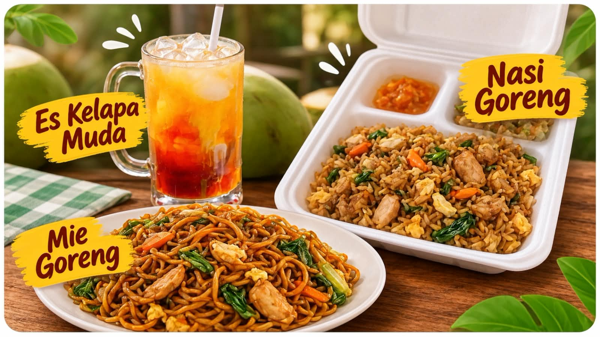
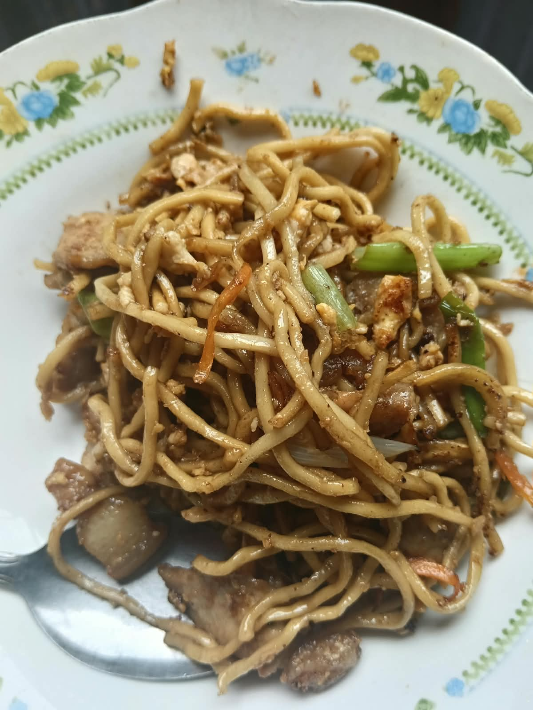

CHINESE-STYLE FOOD & FRESH COCONUT
Good Food.
Good Food.
Fresh Coconut.
Homemade Flavors.
Nikmati nasi goreng dan mie goreng dengan cita rasa khas, serta kelapa muda segar yang disiapkan setiap hari.
Berlokasi di Airmadidi · Makan di tempat atau takeaway

OUR MENU
Something good for your day
Pilih makanan hangat atau minuman kelapa segar favoritmu.

HOMEMADE FLAVORS
Dibuat dengan racikan sendiri
Kecap untuk menu nasi goreng dan mie goreng diracik sendiri oleh Opa. Minuman kelapa juga menggunakan gula batu buatan sendiri.
Kenali Kios Hot Wok
READY TO ORDER?
Temukan menu favoritmu.
Pilih menu, masukkan ke keranjang, lalu kirim pesanan melalui WhatsApp.
Mulai Pesan